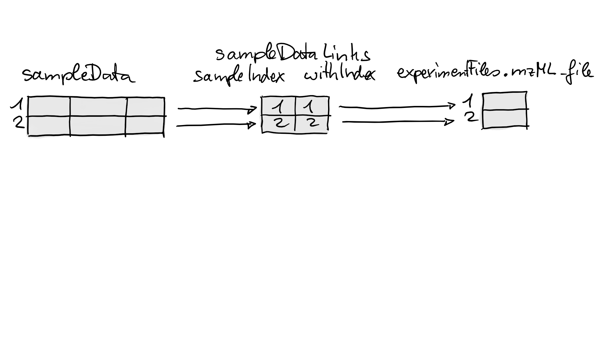
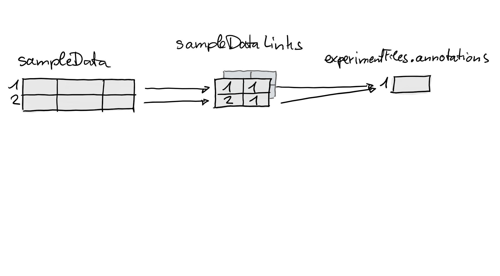
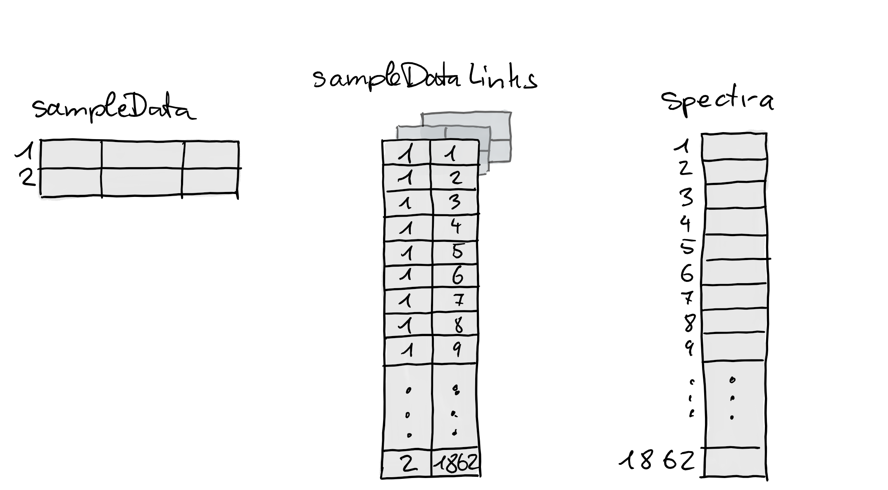

Package: MsExperiment
Authors: Laurent Gatto [aut, cre] (https://orcid.org/0000-0002-1520-2268), Johannes Rainer [aut] (https://orcid.org/0000-0002-6977-7147), Sebastian Gibb [aut] (https://orcid.org/0000-0001-7406-4443)
Last modified: 2021-05-27 13:40:39
Compiled: Thu May 27 14:16:18 2021
The goal of the MsExperiment package is the store and handle all data related to a mass spectrometry experiment. In this vignette, we will describe how to create a MsExperiment object and populate it with various types of data.
We will also use the Spectra package to import mass spectrometry data and thus load it here too.
We will use a small subset of the PXD022816 project (Morgenstern et al. (2020)). The acquisitions correspond to a Pierce Thermo HeLa digestion standard, diluted to 50ng/uL with 97:3 + 0.1% formic acid, and acquired on a QExactive instrument.
Below, we use the rpx package to access the project from the PRIDE repository, and download files of interest. Note that these will automatically be cached in the rpx packages’ cache directory.
## Object of class "PXDataset"
## Id: PXD022816 with 32 files
## [1] 'QEP2LC6_HeLa_50ng_251120_01-calib.mzID.gz' ... [32] 'checksum.txt'
## Use 'pxfiles(.)' to see all files.
pxfiles(px)## [1] "QEP2LC6_HeLa_50ng_251120_01-calib.mzID.gz"
## [2] "QEP2LC6_HeLa_50ng_251120_01-calib.mzML"
## [3] "QEP2LC6_HeLa_50ng_251120_01.raw"
## [4] "QEP2LC6_HeLa_50ng_251120_02-calib.mzID.gz"
## [5] "QEP2LC6_HeLa_50ng_251120_02-calib.mzML"
## [6] "QEP2LC6_HeLa_50ng_251120_02.raw"
## [7] "QEP2LC6_HeLa_50ng_251120_03-calib.mzID.gz"
## [8] "QEP2LC6_HeLa_50ng_251120_03-calib.mzML"
## [9] "QEP2LC6_HeLa_50ng_251120_03.raw"
## [10] "QEP2LC6_HeLa_50ng_251120_04-calib.mzID.gz"
## [11] "QEP2LC6_HeLa_50ng_251120_04-calib.mzML"
## [12] "QEP2LC6_HeLa_50ng_251120_04.raw"
## [13] "QEP2LC6_HeLa_50ng_251120_05-calib.mzID.gz"
## [14] "QEP2LC6_HeLa_50ng_251120_05-calib.mzML"
## [15] "QEP2LC6_HeLa_50ng_251120_05.raw"
## [16] "QEP2LC6_HeLa_50ng_251120_06-calib.mzID.gz"
## [17] "QEP2LC6_HeLa_50ng_251120_06-calib.mzML"
## [18] "QEP2LC6_HeLa_50ng_251120_06.raw"
## [19] "QEP2LC6_HeLa_50ng_251120_07-calib.mzID.gz"
## [20] "QEP2LC6_HeLa_50ng_251120_07-calib.mzML"
## [21] "QEP2LC6_HeLa_50ng_251120_07.raw"
## [22] "QEP2LC6_HeLa_50ng_251120_08-calib.mzID.gz"
## [23] "QEP2LC6_HeLa_50ng_251120_08-calib.mzML"
## [24] "QEP2LC6_HeLa_50ng_251120_08.raw"
## [25] "QEP2LC6_HeLa_50ng_251120_09-calib.mzID.gz"
## [26] "QEP2LC6_HeLa_50ng_251120_09-calib.mzML"
## [27] "QEP2LC6_HeLa_50ng_251120_09.raw"
## [28] "QEP2LC6_HeLa_50ng_251120_10-calib.mzID.gz"
## [29] "QEP2LC6_HeLa_50ng_251120_10-calib.mzML"
## [30] "QEP2LC6_HeLa_50ng_251120_10.raw"
## [31] "README.txt"
## [32] "checksum.txt"The project provides the vendor raw files, the converted mzML files as well as the identification mzid files. Let’s download fractions 1 and 2 of the mzML files.
If you run these commands interactively and it’s the first time you use pxget(), you will be asked to create the rpx cache directory - you can safelfy answer yes. The files will then be downloaded. Next time you want to get the same files, they will be loaded automatically from cache.
## [1] "QEP2LC6_HeLa_50ng_251120_01-calib.mzML"
## [2] "QEP2LC6_HeLa_50ng_251120_02-calib.mzML"
fls <- pxget(px, i)## Loading QEP2LC6_HeLa_50ng_251120_01-calib.mzML from cache.## Loading QEP2LC6_HeLa_50ng_251120_02-calib.mzML from cache.
fls## [1] "/github/home/.cache/R/rpx/5cf84a187165_QEP2LC6_HeLa_50ng_251120_01-calib.mzML"
## [2] "/github/home/.cache/R/rpx/5cf8339178aa_QEP2LC6_HeLa_50ng_251120_02-calib.mzML"Let’s start by creating an empty MsExperiment object that we will populate with different pieces of data as we proceed with the analysis of our data.
msexp <- MsExperiment()
msexp## Object of class MsExperimentLet’s now start with our MS experiment management by saving the relevant files in a dedicated MsExperimentFiles object. In addition to the mzML files, let’s also assume we have the human proteomics fasta file ready. Later, when loading the raw data into R, we will refer directly to the files in this MsExperimentFiles object.
msfls <- MsExperimentFiles(mzmls = fls,
fasta = "homo_sapiens.fasta")
msfls## MsExperimentFiles of length 2
## [["mzmls"]] 5cf84a187165_QEP2LC6_HeLa_50ng_251120_01-calib.mzML ...
## [["fasta"]] homo_sapiens.fastaLet’s add these files to the main experiment management object:
experimentFiles(msexp) <- msfls
msexp## Object of class MsExperiment
## Files: mzmls, fastaThe colData slot is used to describe the overall experimental design of the experiment. It can be used to link samples to the files that are part of the experiment. There can be a one-to-one link between a sample and a file, such as for example in label-free approaches, or one-to-many, in labelled multiplexed approaches.
Here, we are simply going to use the colData slot to match the files to their respective fractions:
sampleData(msexp) <- DataFrame(mzmls = basename(experimentFiles(msexp)[["mzmls"]]),
fractions = 1:2)
sampleData(msexp)## DataFrame with 2 rows and 2 columns
## mzmls fractions
## <character> <integer>
## 1 5cf84a1871... 1
## 2 5cf8339178... 2We can now create a Spectra object containing the raw data stored in the mzML files. If you are not familiar with the Spectra object, please refer to the package vignettes.
sp <- Spectra(experimentFiles(msexp)[["mzmls"]])
sp## MSn data (Spectra) with 58907 spectra in a MsBackendMzR backend:
## msLevel rtime scanIndex
## <integer> <numeric> <integer>
## 1 1 0.177987 1
## 2 1 0.599870 2
## 3 1 0.978849 3
## 4 1 1.363217 4
## 5 1 1.742965 5
## ... ... ... ...
## 58903 2 4198.59 29328
## 58904 1 4198.74 29329
## 58905 1 4199.11 29330
## 58906 1 4199.49 29331
## 58907 1 4199.87 29332
## ... 33 more variables/columns.
##
## file(s):
## 5cf84a187165_QEP2LC6_HeLa_50ng_251120_01-calib.mzML
## 5cf8339178aa_QEP2LC6_HeLa_50ng_251120_02-calib.mzMLWe can now add this object to the main experiment management object:
spectra(msexp) <- sp
msexp## Object of class MsExperiment
## Files: mzmls, fasta
## Spectra: MS1 (12983) MS2 (45924)
## Experiment data: 2 sample(s)Let’s now assume we want to search the spectra in our mzML files against the homo_sapiens.fasta file. To do so, we would like to use a search engine such as MSGF+, that is run using the command line and generates mzid files.
The command to run MSGF+ would look like this (see the manual page for details):
java -jar /path/to/MSGFPlus.jar \
-s input.mzML \
-o output.mzid
-d proteins.fasta \
-t 20ppm \ ## precursor mass tolerance
-tda 1 \ ## search decoy database
-m 0 \ ## fragmentation method as written in the spectrum or CID if no info
-int 1 ## Orbitrap/FTICR/LumosWe can easily build such a command for each of our input file:
mzids <- sub("mzML", "mzid", basename(experimentFiles(msexp)[["mzmls"]]))
paste0("java -jar /path/to/MSGFPlus.jar",
" -s ", experimentFiles(msexp)[["mzmls"]],
" -o ", mzids,
" -d ", experimentFiles(msexp)[["fasta"]],
" -t 20ppm",
" -m 0",
" int 1")## [1] "java -jar /path/to/MSGFPlus.jar -s /github/home/.cache/R/rpx/5cf84a187165_QEP2LC6_HeLa_50ng_251120_01-calib.mzML -o 5cf84a187165_QEP2LC6_HeLa_50ng_251120_01-calib.mzid -d homo_sapiens.fasta -t 20ppm -m 0 int 1"
## [2] "java -jar /path/to/MSGFPlus.jar -s /github/home/.cache/R/rpx/5cf8339178aa_QEP2LC6_HeLa_50ng_251120_02-calib.mzML -o 5cf8339178aa_QEP2LC6_HeLa_50ng_251120_02-calib.mzid -d homo_sapiens.fasta -t 20ppm -m 0 int 1"Here, for the sake of time and portability, we will not actually run MSGF+, but a simple shell script that will generate mzid files in a temporary R directory.
## [1] "/tmp/RtmpIsa2Vp/5cf84a187165_QEP2LC6_HeLa_50ng_251120_01-calib.mzid"
## [2] "/tmp/RtmpIsa2Vp/5cf8339178aa_QEP2LC6_HeLa_50ng_251120_02-calib.mzid"
cmd <- paste("touch", output)
cmd## [1] "touch /tmp/RtmpIsa2Vp/5cf84a187165_QEP2LC6_HeLa_50ng_251120_01-calib.mzid"
## [2] "touch /tmp/RtmpIsa2Vp/5cf8339178aa_QEP2LC6_HeLa_50ng_251120_02-calib.mzid"The cmd variable holds the two commands to be run on the command line that will generate the new files. We can run each of these commands with the system() function.
sapply(cmd, system)## touch /tmp/RtmpIsa2Vp/5cf84a187165_QEP2LC6_HeLa_50ng_251120_01-calib.mzid
## 0
## touch /tmp/RtmpIsa2Vp/5cf8339178aa_QEP2LC6_HeLa_50ng_251120_02-calib.mzid
## 0Below, we add the names of the newly created files to our experiment:
experimentFiles(msexp)[["mzids"]] <- mzids
experimentFiles(msexp)## MsExperimentFiles of length 3
## [["mzmls"]] 5cf84a187165_QEP2LC6_HeLa_50ng_251120_01-calib.mzML ...
## [["fasta"]] homo_sapiens.fasta
## [["mzids"]] 5cf84a187165_QEP2LC6_HeLa_50ng_251120_01-calib.mzid ...
msexp## Object of class MsExperiment
## Files: mzmls, fasta, mzids
## Spectra: MS1 (12983) MS2 (45924)
## Experiment data: 2 sample(s)We can also decide to store the commands that were used to generate the mzid files in the experiment’s metadata slot. Here, we use the convention to name that metadata item "mzmls_to_mzids" to document to input and output of these commands.
## $mzmls_to_mzids
## [1] "touch /tmp/RtmpIsa2Vp/5cf84a187165_QEP2LC6_HeLa_50ng_251120_01-calib.mzid"
## [2] "touch /tmp/RtmpIsa2Vp/5cf8339178aa_QEP2LC6_HeLa_50ng_251120_02-calib.mzid"Finally, the existMsExperimentFiles() can be used at any time to check which of files that are associated with an experiment actually exist:
existMsExperimentFiles(msexp)## mzmls: 2 out of 2 exist(s)
## fasta: 0 out of 1 exist(s)
## mzids: 0 out of 2 exist(s)The MsExperiment object has been used to store files and data pertaining to a mass spectrometry experiment. It is now possible to save that object and reload it later to recover all data and metadata.
msexp <- readRDS("msexp.rda")
msexp## Object of class MsExperiment
## Files: mzmls, fasta, mzids
## Spectra: MS1 (12983) MS2 (45924)
## Experiment data: 2 sample(s)
experimentFiles(msexp)## MsExperimentFiles of length 3
## [["mzmls"]] 5cf84a187165_QEP2LC6_HeLa_50ng_251120_01-calib.mzML ...
## [["fasta"]] homo_sapiens.fasta
## [["mzids"]] 5cf84a187165_QEP2LC6_HeLa_50ng_251120_01-calib.mzid ...We can access the raw data as long as the mzML files that were used to generate it still exist in their original location, which is the case here as they were saved in the rpx cache directory.
sp <- spectra(msexp)
sp## MSn data (Spectra) with 58907 spectra in a MsBackendMzR backend:
## msLevel rtime scanIndex
## <integer> <numeric> <integer>
## 1 1 0.177987 1
## 2 1 0.599870 2
## 3 1 0.978849 3
## 4 1 1.363217 4
## 5 1 1.742965 5
## ... ... ... ...
## 58903 2 4198.59 29328
## 58904 1 4198.74 29329
## 58905 1 4199.11 29330
## 58906 1 4199.49 29331
## 58907 1 4199.87 29332
## ... 33 more variables/columns.
##
## file(s):
## 5cf84a187165_QEP2LC6_HeLa_50ng_251120_01-calib.mzML
## 5cf8339178aa_QEP2LC6_HeLa_50ng_251120_02-calib.mzML
plotSpectra(sp[1000])For some experiments and data analyses an explicit link between data, data files and respective samples is required. Such links enable an easy (and error-free) subsetting or re-ordering of a whole experiment by sample and would also simplify coloring and labeling of the data depending on the sample or of its variables or conditions.
Below we generate an MsExperiment object for a simple experiment consisting of a single sample measured in two different injections to the same LC-MS setup.
lmse <- MsExperiment()
sd <- DataFrame(sample_id = c("QC1", "QC2"),
sample_name = c("QC Pool", "QC Pool"),
injection_idx = c(1, 3))
sampleData(lmse) <- sdWe next add mzML files to the experiment for the sample that was measured. These are available within the msdata R package. We add also an additional annotation file "internal_standards.txt" to the experiment, which could be e.g. a file with m/z and retention times of internal standards added to the sample (note that such files don’t necessarily have to exist).
fls <- dir(system.file("sciex", package = "msdata"), full.names = TRUE)
basename(fls)## [1] "20171016_POOL_POS_1_105-134.mzML" "20171016_POOL_POS_3_105-134.mzML"
experimentFiles(lmse) <- MsExperimentFiles(
mzML_files = fls,
annotations = "internal_standards.txt")Next we load the MS data from the mzML files as a Spectra object and add them to the experiment (see the vignette of the Spectra for details on import and representation of MS data).
sps <- Spectra(fls, backend = MsBackendMzR())
spectra(lmse) <- sps
lmse## Object of class MsExperiment
## Files: mzML_files, annotations
## Spectra: MS1 (1862)
## Experiment data: 2 sample(s)At this stage we have thus sample annotations and MS data in our object, but no explicit relationships between them. We next use the linkSpectraData function to establish and define such relationships. First we link the experimental files to the samples: we want to link the first mzML file in the element called "mzML_file" in the object’s experimentFiles to the first row in sampleData and the second file to the second row.
lmse <- linkSampleData(lmse, with = "experimentFiles.mzML_file",
sampleIndex = c(1, 2), withIndex = c(1, 2))To define the link we have thus to specify with which element within our MsExperiment we want to link samples. This can be done with the parameter with that takes a single character representing the name (address) of the data element. The name is a combination of the name of the slot within the MsExperiment and the name of the element (or column) within that slot separated by a ".". Using with = "experimentFiles.mzML_file" means we want to link samples to values within the "mzML_file" element of the object’s experimentFiles slot - in other words, we want to link samples to values in experimentFiles(lmse)$mzML_file. The indices of the rows (samples) in sampleData and the indices of the values in with to which we want to link the samples can be defined with sampleIndex and withIndex. In the example above we used sampleIndex = c(1, 2) and withIndex = c(1, 2), thus, we want to link the first row in sampleData to the first value in with and the second row to the second value. See also the section Linking sample data to other experimental data in the documentation of MsExperiment for more information and details.
What happened internally by the call above is illustrated in the figure below. The link is represented as a two-column integer matrix with the indices of the linked sample in the first and the indices of the associated elements in the second columns (this matrix is essentially a cbind(sampleIndex, withIndex)).

We next establish a second link between each sample and the annotation file "internal_standards.txt" in experimentFiles(lmse)$standards:
lmse <- linkSampleData(lmse, with = "experimentFiles.annotations",
sampleIndex = c(1, 2), withIndex = c(1, 1))The figure below illustrates again what happened internally by this call: a new link matrix was added establishing the relationship between the two samples and the one value in experimentFiles(lmse)$annotations.

It is thus also possible to link different samples to the same element. We next link the spectra in the object to the individual samples. We use for that an alternative way to specify the link without the need to provide sampleIndex and withIndex. Sample-to-data links can also be specified using a syntax similar to an SQL join: "sampleData.<column in sampleData> = <slot>.<element in slot>". Links will be thus established between elements with matching values in the specified data fields (i.e. between rows in sampleData for which values in the specified column matches values in <slot>.<element>). In order to use this alternative approach to link spectra to the respective samples we have to first add the (full) raw file name as an additional column to the object’s sampleData. We can now add links between spectra and samples by matching this raw file name to the original file name from which the spectra were imported (which is available in the "dataOrigin" spectra variable).
sampleData(lmse)$raw_file <- normalizePath(fls)
lmse <- linkSampleData(
lmse, with = "sampleData.raw_file = spectra.dataOrigin")The link was thus established between matching values in sampleData(lmse)$raw_file and spectra(lmse)$dataOrigin.
sampleData(lmse)$raw_file## [1] "/usr/local/lib/R/host-site-library/msdata/sciex/20171016_POOL_POS_1_105-134.mzML"
## [2] "/usr/local/lib/R/host-site-library/msdata/sciex/20171016_POOL_POS_3_105-134.mzML"## [1] "/usr/local/lib/R/host-site-library/msdata/sciex/20171016_POOL_POS_1_105-134.mzML"
## [2] "/usr/local/lib/R/host-site-library/msdata/sciex/20171016_POOL_POS_1_105-134.mzML"
## [3] "/usr/local/lib/R/host-site-library/msdata/sciex/20171016_POOL_POS_1_105-134.mzML"
## [4] "/usr/local/lib/R/host-site-library/msdata/sciex/20171016_POOL_POS_1_105-134.mzML"
## [5] "/usr/local/lib/R/host-site-library/msdata/sciex/20171016_POOL_POS_1_105-134.mzML"
## [6] "/usr/local/lib/R/host-site-library/msdata/sciex/20171016_POOL_POS_1_105-134.mzML"The figure below illustrates this link. With that last call we have thus established links between samples and 3 different data elements in the MsExperiment.

lmse## Object of class MsExperiment
## Files: mzML_files, annotations
## Spectra: MS1 (1862)
## Experiment data: 2 sample(s)
## Sample data links:
## - experimentFiles.mzML_file: 2 sample(s) to 2 element(s).
## - experimentFiles.annotations: 2 sample(s) to 1 element(s).
## - spectra: 2 sample(s) to 1862 element(s).If we had also quantified feature values, we could also link them to the samples. Below we create a simple, small SummarizedExperiment to represent such quantified feature values and add that to our experiment. To show that MsExperiment supports also links between subsets of data elements, we create a SummarizedExperiment that contains values for an additional sample which is not present in our sampleData. Also, we add samples in an arbitrary order.
library(SummarizedExperiment)
sd <- DataFrame(sample = c("QC2", "QC1", "QC3"), idx = c(3, 1, 5))
se <- SummarizedExperiment(colData = sd, assay = cbind(1:10, 11:20, 21:30))
lmse@assay <- seNext we link the samples in this SummarizedExperiment to the samples to in the MsExperiment using matching values between the "sample_id" column in the object’s sampleData and the column "sample" in the SummarizedExperiment’s "sample" variable.
sampleData(lmse)$sample_id## [1] "QC1" "QC2"
lmse@assay$sample## [1] "QC2" "QC1" "QC3"
lmse <- linkSampleData(lmse, with = "sampleData.sample_id = assay.sample")
lmse## Object of class MsExperiment
## Files: mzML_files, annotations
## Spectra: MS1 (1862)
## Experiment data: 2 sample(s)
## Sample data links:
## - experimentFiles.mzML_file: 2 sample(s) to 2 element(s).
## - experimentFiles.annotations: 2 sample(s) to 1 element(s).
## - spectra: 2 sample(s) to 1862 element(s).
## - assay: 2 sample(s) to 2 column(s).The main advantage of all these links is that any subsetting of the experiment by sample will keep the (linked) data consistent. To illustrate this we subset below the experiment to the second sample.
b <- lmse[, 2]
b## Object of class MsExperiment
## Files: mzML_files, annotations, mzML_file
## Spectra: MS1 (931)
## Experiment data: 1 sample(s)
## Sample data links:
## - experimentFiles.mzML_file: 1 sample(s) to 1 element(s).
## - experimentFiles.annotations: 1 sample(s) to 1 element(s).
## - spectra: 1 sample(s) to 931 element(s).
## - assay: 1 sample(s) to 1 column(s).The subsetted object contains now all data elements that are linked to this second sample. Accessing the assay of the SummarizedExperiment in assay will thus return only the quantified feature abundances for this second sample.
assay(b@assay)## [,1]
## [1,] 1
## [2,] 2
## [3,] 3
## [4,] 4
## [5,] 5
## [6,] 6
## [7,] 7
## [8,] 8
## [9,] 9
## [10,] 10But what happens for data elements that are not linked to any sample? Below we add a data.frame as a metadata to the experiment and subset the object again.
metadata(lmse)$other <- data.frame(sample_name = c("study_1", "POOL", "study_2"),
index = 1:3)
b <- lmse[, 2]
metadata(b)## $other
## sample_name index
## 1 study_1 1
## 2 POOL 2
## 3 study_2 3By default, any element which is not linked to a sample is retained. We next link each sample to the second row in this data frame and subset the data again to the second sample.
lmse <- linkSampleData(lmse, with = "metadata.other",
sampleIndex = 1:2, withIndex = c(2, 2))
b <- lmse[, 2]
metadata(b)## $other
## sample_name index
## 2 POOL 2Subsetting thus retained only the row in the data frame for the linked sample. Obviously it is also possible to subset to multiple samples, in arbitrary order. Below we re-order our experiment.
lmse <- lmse[, c(2, 1)]
sampleData(lmse)## DataFrame with 2 rows and 4 columns
## sample_id sample_name injection_idx raw_file
## <character> <character> <numeric> <character>
## 1 QC2 QC Pool 3 /usr/local...
## 2 QC1 QC Pool 1 /usr/local...The sample order is thus reversed and also all other linked elements are re-ordered accordingly, such as "mzML_file" in the object’s experimentFiles.
experimentFiles(lmse)$mzML_file## [1] "/usr/local/lib/R/host-site-library/msdata/sciex/20171016_POOL_POS_3_105-134.mzML"
## [2] "/usr/local/lib/R/host-site-library/msdata/sciex/20171016_POOL_POS_1_105-134.mzML"It is however important to note, that subsetting will also duplicate elements that are associated with multiple samples:
experimentFiles(lmse)$annotations## [1] "internal_standards.txt" "internal_standards.txt"Thus, while we added a single annotation file to the data element "annotations" in experimentFiles, after subsetting we ended up with two identical files. This duplication of n:m relationships between samples to elements does however not affect data consistency. A sample will always be linked to the correct value/element.
## R version 4.1.0 (2021-05-18)
## Platform: x86_64-pc-linux-gnu (64-bit)
## Running under: Ubuntu 20.04.2 LTS
##
## Matrix products: default
## BLAS/LAPACK: /usr/lib/x86_64-linux-gnu/openblas-pthread/libopenblasp-r0.3.8.so
##
## locale:
## [1] LC_CTYPE=en_US.UTF-8 LC_NUMERIC=C
## [3] LC_TIME=en_US.UTF-8 LC_COLLATE=en_US.UTF-8
## [5] LC_MONETARY=en_US.UTF-8 LC_MESSAGES=C
## [7] LC_PAPER=en_US.UTF-8 LC_NAME=C
## [9] LC_ADDRESS=C LC_TELEPHONE=C
## [11] LC_MEASUREMENT=en_US.UTF-8 LC_IDENTIFICATION=C
##
## attached base packages:
## [1] parallel stats4 stats graphics grDevices utils datasets
## [8] methods base
##
## other attached packages:
## [1] SummarizedExperiment_1.23.0 Biobase_2.53.0
## [3] GenomicRanges_1.45.0 GenomeInfoDb_1.29.0
## [5] IRanges_2.27.0 MatrixGenerics_1.5.0
## [7] matrixStats_0.58.0 rpx_2.1.0
## [9] Spectra_1.3.0 BiocParallel_1.27.0
## [11] S4Vectors_0.31.0 BiocGenerics_0.39.0
## [13] MsExperiment_0.6.1 ProtGenerics_1.25.0
## [15] BiocStyle_2.21.0
##
## loaded via a namespace (and not attached):
## [1] bitops_1.0-7 fs_1.5.0
## [3] bit64_4.0.5 filelock_1.0.2
## [5] httr_1.4.2 rprojroot_2.0.2
## [7] tools_4.1.0 bslib_0.2.5.1
## [9] utf8_1.2.1 R6_2.5.0
## [11] DBI_1.1.1 lazyeval_0.2.2
## [13] withr_2.4.2 tidyselect_1.1.1
## [15] bit_4.0.4 curl_4.3.1
## [17] compiler_4.1.0 textshaping_0.3.4
## [19] xml2_1.3.2 desc_1.3.0
## [21] DelayedArray_0.19.0 bookdown_0.22
## [23] sass_0.4.0 rappdirs_0.3.3
## [25] pkgdown_1.6.1.9001 systemfonts_1.0.2
## [27] stringr_1.4.0 digest_0.6.27
## [29] rmarkdown_2.8 XVector_0.33.0
## [31] pkgconfig_2.0.3 htmltools_0.5.1.1
## [33] highr_0.9 dbplyr_2.1.1
## [35] fastmap_1.1.0 rlang_0.4.11
## [37] RSQLite_2.2.7 jquerylib_0.1.4
## [39] generics_0.1.0 jsonlite_1.7.2
## [41] dplyr_1.0.6 RCurl_1.98-1.3
## [43] magrittr_2.0.1 GenomeInfoDbData_1.2.6
## [45] Matrix_1.3-3 Rcpp_1.0.6
## [47] fansi_0.5.0 MsCoreUtils_1.5.0
## [49] lifecycle_1.0.0 stringi_1.6.2
## [51] yaml_2.2.1 MASS_7.3-54
## [53] zlibbioc_1.39.0 BiocFileCache_2.1.0
## [55] grid_4.1.0 blob_1.2.1
## [57] crayon_1.4.1 lattice_0.20-44
## [59] mzR_2.27.0 knitr_1.33
## [61] pillar_1.6.1 QFeatures_1.3.0
## [63] codetools_0.2-18 glue_1.4.2
## [65] evaluate_0.14 BiocManager_1.30.15
## [67] MultiAssayExperiment_1.19.1 vctrs_0.3.8
## [69] purrr_0.3.4 clue_0.3-59
## [71] assertthat_0.2.1 cachem_1.0.5
## [73] xfun_0.23 AnnotationFilter_1.17.0
## [75] ragg_1.1.2 ncdf4_1.17
## [77] tibble_3.1.2 memoise_2.0.0
## [79] cluster_2.1.2 ellipsis_0.3.2